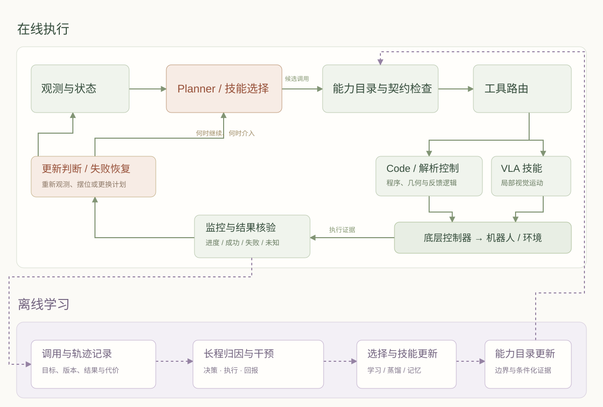
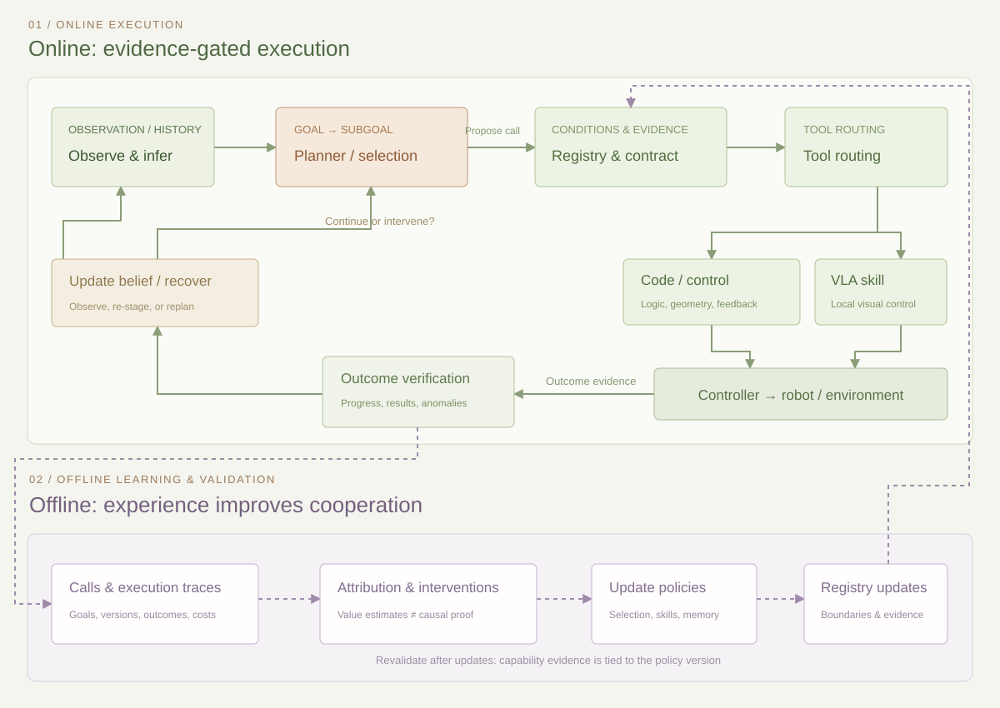

一个机器人可能已经会抓杯子、会搬运、会放置，却依然无法可靠地把杯子放进托盘。问题可能发生在抓取之前：Planner 选中了不适用的技能；也可能发生在抓取之后：技能虽然完成了局部目标，却留下了无法继续放置的姿态。对于长程具身任务，更强的规划器与更强的动作策略并不会自动形成更强的系统。真正需要建立的，是双方关于目标、能力边界、执行结果与失败责任的共同理解。
“会做”为什么还不等于“会协作”
这里的 Planner 指选择子目标、工具与执行顺序的高层决策机制；Skill 指在一定条件下持续执行一段行为的能力单元。Skill 可以是手写控制程序、运动规划器、由语言模型生成的代码，也可以是学习得到的视觉运动策略。Tool 则强调可调用的接口形式。一个函数可以包装技能，但函数名本身并不说明技能何时有效、完成什么、如何退出。
这一问题有明确的理论前史。Options 框架用启动集合、内部策略与终止条件描述持续多个时间步的动作，让规划和学习能够发生在不同时间尺度上。[1]今天的变化在于，上层越来越多地接收开放的语言目标，底层则可能由大规模数据训练而来；两者不再天然共享一套精确的状态、动作和效果定义。高层说“把这个杯子放好”，底层究竟把“这个”“放好”和“现在结束”理解成什么，需要被单独检验。
“兵不识将、将不识兵”因而对应两个可分离的错误。前者是调用意图没有被低层忠实实现，例如让策略抓左侧杯子，它仍沿熟悉轨迹抓右侧杯子；后者是高层错误估计低层能力，例如默认“抓取”适用于任意物体、任意初始位姿。两种错误可能产生同样的最终失败，却需要完全不同的训练数据与修复手段。
本文关注可调用技能与高层决策之间的边界，不把所有机器人智能问题都归结为接口。接触建模、感知精度、动作数据覆盖与控制延迟仍可能是直接瓶颈。这里提出的是一个系统视角：当组件已经具有一定能力时，应怎样识别协作损失，并把它转化成可验证、可优化的对象。
五条并行发展的路线
从语言计划到可行性接地
SayCan 的重要性在于把两个问题拆开：一个技能是否推进语言目标，以及它是否能在当前环境中成功。语言模型提供前者，技能价值或可行性估计提供后者。[2]Inner Monologue 进一步把成功检测、场景描述等反馈送回规划过程，让下一步计划能够随执行结果改变。[3]这一阶段确立的原则一直有效：计划需要依赖机器人能够执行的动作，而反馈需要能够改变后续决策。它的局限也很清楚：如果技能目录的覆盖不足，或可行性估计本身失准，语言推理无法凭空补齐物理能力。
从选择技能到生成可执行程序
Code as Policies 让模型组织函数、条件循环与几何计算，使用感知和控制 API 产生行为；因此，代码控制从一开始就可以包含反馈，而不必是一次性开环脚本。[4]VoxPoser 则把语言中的空间约束转为三维价值图，再通过规划生成轨迹。[5]这条路线将组合结构显式化，但它的实际能力仍依赖 API 提供了什么抽象，以及观测能否支撑这些计算。一个看似通用的“抓取”函数，可能已经藏入了大量人工经验。
CaP-X 将这种依赖变成可评测的问题：控制抽象越接近人类设计好的任务结构，模型通常越容易成功；移除这些先验后，性能会下降，而多轮交互、结构化反馈与更多测试时计算可以缓解部分差距。[11]因此，评价编程智能体时，代码是否由模型生成只是起点；更重要的是它获得了哪些控制原语、允许多少次试错，以及是否需要在执行期间继续调用大模型。
从完整任务策略到可调用的 VLA
以 OpenVLA 为代表的视觉语言动作模型，将视觉、语言与机器人动作学习到同一策略中，使大量局部行为不必逐一手写。[6]但“输入含有语言”与“能够忠实接受高层的任意子任务调用”并不是同一件事。完整轨迹训练可能让策略依赖场景规律，或继续完成训练中常见的后续动作；高层需要它提前停止、更换对象、改变目的地时，这些习惯可能成为限制。
VLAs-as-Tools 因而同时研究执行器与接口：通过调用对齐的后训练组织有边界的操作，用工具族选择与执行进度反馈连接规划和控制。[7]Cortex 则用结构化的可执行子任务、记忆与进度验证对齐高层编排和局部动作。[8]前者更直接触及“本次调用有没有被遵守”，后者强调长程任务中子目标、状态与切换的连贯性。它们共同说明，把一个通用策略封装成工具，需要改变可监督、可观测的执行语义，而不只是增加一层函数调用。
从固定分工到条件化编排
Harness VLA 提供了另一种取舍：冻结 VLA，把它作为局部接触操作原语，再与重新定位、摆位、运输和释放等解析操作组合。记忆保存执行经验，帮助高层认识这些固定原语的适用范围。[9]其研究价值在于说明，高层不仅可以“选择技能”，还可以先改变场景和起始状态，让一个原本容易失败的技能变得可用。重新摆位在这里是一种能力准备，而不仅是失败后的补丁。
What Matters in Orchestrating Robot Policies 进一步系统考察规划器、动作策略、终止机制、观测与记忆的设计。[10]它提醒我们，同一底层策略可以因为编排方式不同而产生明显不同的长程表现；反过来，某个系统的提升也不能自动解释为“Planner 更聪明了”。指令跟随、成功检测和状态表示，都可能是改变结果的具体因素。
从解决一次任务到形成可复用能力
EmbodiedSWE 将编程智能体的角色从在线执行者扩展到能力生产者：先获得验证通过的代码解，再通过多层次变化产生轨迹，训练机器人策略。[12]这使昂贵的求解成本有机会在后续大量执行中被分摊。近期的 EmbodiedEvo 也关注将物理反馈沉淀为可复用代码技能与诊断经验。[18]这些路线的共同目标是保留探索所得，但保留的载体不同：可以是代码、经验规则，也可以是策略参数。哪种载体更适合当前任务，取决于复用次数、场景变化、反馈成本和动作精度要求。
让双方共享一次调用的含义
“Planner 认识技能”不应被压缩成一段更长的工具说明。真正有用的能力描述需要支持决策：允许从什么条件开始，能提供哪些结果保证，失败时会留下什么状态，以及这些判断有多少执行证据。对应地，“技能理解 Planner”也不应只用训练集上的整任务成功率证明；需要在相似场景中主动改变目标对象、空间关系和终止点，观察策略是否随本次指令变化。VLAs-as-Tools 的调用忠实度评测正体现了后一种区分。[7]
为统一讨论，本文把一次调用的约定称为能力契约。这不是声称领域已有统一标准，而是把散落在提示词、动作封装、训练标签和验证器中的假设放到同一处。能力目录回答“有哪些技能、其经验边界在哪里”；能力契约回答“这一次究竟要求哪项技能在什么条件下完成什么”。
| 契约内容 | 以抓杯子为例 | 缺失时的风险 |
|---|---|---|
| 目标与参数 | 对象标识、抓取姿态约束、坐标系与单位 | 对象绑定正确，但几何参数含义错误 |
| 启动条件 | 可达、目标可见、夹爪状态适合抓取 | 把起始条件不满足归咎为技能能力不足 |
| 完成与终止 | 物体稳定随夹爪移动；超时、卡住分别返回 | 夹爪闭合就被当作抓取成功 |
| 后置条件 | 抓取姿态支持下一步搬运与放置 | 当前技能成功，后续技能无法接续 |
| 反馈与代价 | 进度、异常、耗时、观测证据 | 高层不知道何时介入，也无法比较恢复方案 |
| 适用证据与版本 | 对象类别、初始状态、策略版本、验证样本 | 把旧策略或其他场景的经验当作当前保证 |
这里还必须区分三个量：语义相关性、局部成功可能性和长期任务价值。能轻松完成的动作，未必值得执行；难度较高的一步，也可能是完成任务所必需。若把可行性分数当作长期 Q 值，系统可能不断选择容易成功却无法推进任务的技能。条件化可靠性应回答“在当前条件与版本下能否达到约定结果”，长期价值则回答“达到这个结果以后，最终任务还有多大收益”。
技能组合的核心困难由此显现：即使每项技能都有较高的局部成功率，它们连接后的分布也可能不同。抓取造成的物体朝向、夹持位置与剩余空间，都是下一项技能的输入条件。可组合能力因此需要联合考虑前置条件、后置条件与状态变化，而不能把整回合成功率简单写成若干个固定数字相乘。
把能力、边界与反馈放进同一张图
下面的关系图保留十四个核心节点，并补全验证结果返回 Planner、长程归因分别更新高层选择与局部策略的路径。点击节点可查看定义、代表方法与关键问题；切换任务阶段后，图会突出相关依赖，下方同时显示需要的证据与风险。
用两个闭环组织整个系统
一张从 Planner 向 Skill 再向机器人的单向箭头图，容易把最关键的机制藏起来：Planner 用什么证据做决定，技能用什么信号结束，以及一次失败如何影响未来。更清晰的系统应分开组织在线执行与离线学习，再用统一的调用记录连接二者。

在线闭环从观测开始。机器人通常只有部分观测，因此应维护对象绑定、历史和不确定性，而不是把当前图像当作完整状态。Planner 结合任务目标与能力目录提出调用；执行前检查启动条件与参数含义，再由工具路由选择代码、解析控制或 VLA。这里的路由依据应是条件化能力，而非固定规定“凡是推理用代码、凡是接触用 VLA”。代码也能包含闭环控制，学习策略也可能覆盖运输；真正的边界需要在所用实现上测量。
执行反馈至少应区分进行中、成功、失败与未知。进度变化可以触发 Planner，但不必让大模型在每个底层控制步都重新思考。终止机制与中断机制也应分开：技能认为自己完成了，并不意味着外部目标判据已经满足；高层希望换任务，也不意味着底层可以立即无状态地切断。What Matters 与 VLAs-as-Tools 分别从编排分析和接口设计的角度支持了对这些切换机制的关注。[10][7]
验证器需要检查任务结果，而不是重复工具的自我描述。对于杯子任务，夹爪张开只证明释放动作发生，不能证明杯子稳定留在托盘内。多个模块即使用同一基础模型，也可能共享感知误差，不能把多次相同判断当作独立证据。恢复时应先重新观测，再决定调整起始条件、切换工具或重新规划；重复调用只有在失败条件已经改变或存在合理随机性的情况下，才构成有依据的恢复。
离线闭环处理另一类工作：对齐每次高层决策、局部轨迹、终止原因、奖励与代价，分析成功或失败发生的条件，再更新能力目录、规划选择或执行策略。某些验证过的成功轨迹可以用于模仿学习，某些失败和恢复片段可以用于优化策略，某些经验适合保存成可检索规则。EmbodiedSWE 与 Harness VLA 分别体现了参数学习和经验记忆这两种不同的积累路径。[12][9]
World Model 可以插入候选评估环节，用于比较不同动作可能带来的结果，但它不是这套架构必需的固定一层。预测误差、物体绑定错误和模拟偏差需要进入决策的不确定性；预测画面“看起来成功”不能替代真实执行验证。作为本文的研究设想，候选预演更适合补充昂贵或困难阶段的证据，而不是默认接管每一次控制决策。
长程回报应该分给谁
假设杯子在最后放置时掉落，直接惩罚最后一个动作可能并不正确：早先的抓取位置使杯子始终不稳定；也可能是搬运速度过高，或 Planner 选择了不匹配的放置方式。Credit assignment 要处理的，是结果跨越时间和层级后的贡献估计。它既不是把总奖励平均分给每个技能，也不能只依赖失败发生的时间位置。
先看高层时间尺度。设一次技能选择从状态 s 开始，执行 τ 个底层步后到达 s′。在理想化的半马尔可夫表示中，它的长期价值满足下面的关系。Options 框架提供了这种时间抽象的基础。[1]
s 在此表示足以支持该模型的状态；部分可观测任务需要历史或信念等适当表示，不能直接把一张图像视为满足马尔可夫性质的状态。若系统按高层决策步定义奖励与折扣，也可以建立另一套一致的模型，但不能混用两种时间尺度。
这个公式的实际含义是：持续五步和持续五百步的技能，不能在使用底层时间折扣时都简单只乘一次 γ。高层选择的收益需要包括执行中的奖励、时间或资源代价，以及终止后留下的状态价值。否则，Planner 可能偏好看起来便宜、实际占用很长时间的技能，也可能低估一次有助于后续执行的重新摆位。
GAE 通过价值估计与时序差分残差组织 advantage，PPO 则是一种优化策略更新的方式。[13][14]它们并不会自动决定“Planner 和 Skill 各承担多少责任”。如果高层仅使用冻结模型加提示词，常规 PPO 也不能凭一条最终奖励就更新提示词本身；必须先明确可以训练的策略、动作表示与更新路径。低层的局部优势可以奖励抓取稳定性，高层的优势则应反映选择该技能对任务完成的长期作用，两者可能并不相同。
RUDDER 对延迟奖励的回报分解提供了有价值的思路。[15]但预测贡献仍不等于因果责任：在成功轨迹里总是出现的动作，未必是必要动作。更可靠的分析需要可比较的干预，例如固定初始条件与 Planner，只替换一次工具调用；或者固定执行器，只更换高层选择。状态恢复还要保证与行为相关的模拟器、控制与历史状态一致，否则反事实比较可能从一开始就不等价。没有干预证据时，应把归因明确写成假设。
现有结果证明了什么，又没有证明什么
这些研究的证据具有互补性，却很难用单一排行榜表示。动作接口、可用观测、策略训练数据、试错预算和任务分布不同，都会改变成功率的含义。即使同样写着 LIBERO，标准套件、扰动版本、反事实指令测试和自建子任务切分，也可能对应不同的问题。[16]
What Matters 的长时域任务组，在同一底层 VLA 下，平坦控制、朴素层级与最佳编排分别为 25.30%、40.56%、67.08%。它支持接口与编排具有实质作用，但结论仍受该研究的任务与系统设置约束。[10]
VLAs-as-Tools 的 LIBERO-IF 测试中，π0.5 的指定目标完成率随完整 TAPT 从 24.8% 提高到 54.8%。这个指标直接检查本次请求，与长程整任务成功率具有不同含义。[7]
| 代表工作 | 主要检验对象 | 阅读证据时需要保留的条件 |
|---|---|---|
| What Matters[10] | 编排、观测、记忆与终止机制 | 同一研究内控制底层策略，才能较好分离编排收益；不推出所有模型都适用同一最优结构。 |
| VLAs-as-Tools[7] | 调用对齐与双向接口 | 任务成功、指定目标完成与避免原任务偏置是不同指标；无偏置也不自动意味着完成新目标。 |
| Cortex[8] | 结构化子目标、记忆与进度核验 | 需要同时看规划数据、动作策略及训练设置；结构化技能空间的外部覆盖仍需检验。 |
| Harness VLA[9] | 冻结策略的条件准备与原语组合 | 区分记忆构建、测试执行及重试代价；它没有因此完成高低层联合强化学习。 |
| CaP-X[11] | 编程控制中的先验与交互预算 | 公开动作 API、抽象层级与反馈权限；测试时计算增加本身就是需要计入的资源。 |
| EmbodiedSWE[12] | 长程求解及验证解到训练数据的转化 | 区分首次搜索成本、生成数据成本和训练后策略的执行成本；它们不应混称一次 rollout 成本。 |
例如，VLAs-as-Tools 的反事实调用测试将高层计划固定，改变请求目标，分别衡量是否完成本次请求、是否仍受原始任务偏置影响。[7]这种设计比只看最终成功率更接近“兵是否识将”的问题。相应地，检验“将是否识兵”应固定技能库与能力参数，只改变 Planner 能获得的能力证据，看它是否减少无效调用并改善任务收益。
RoboDojo 同时提供仿真与真实环境评测，覆盖多种操作能力。[17]其官方报告收录的 Code-as-Policies 社区路线，明确采用开发时迭代、冻结代码后执行的方式；这是一种具体方案的评测设置，不代表所有 RoboDojo 方法都采用相同流程。对于这种设置，不能把“执行时无需大模型”解读为“整个方案没有大模型成本”，也不能把开发阶段的多轮求解与在线 Planner 的单回合执行直接比较。官方报告 ↗
一个面向协作的报告至少需要保留三组结果：整回合成功与阶段进展；调用忠实度、边界判断与技能交接；成本与失败恢复。可靠性估计还应检查是否校准，并给出样本数量和覆盖条件。API 费用应写清模型、价格日期与计费口径，墙钟时间应区分思考、工具等待、物理执行及离线探索。本文不将不同协议的数字合并成“哪条路线已经胜出”的结论。
更值得推进的，是可证伪的能力协作
第一，把技能目录升级为有执行证据的能力模型。可以固定 Planner、技能库和任务，逐步增加名称、启动与后置条件、条件化执行统计三种信息，比较选择错误、无效调用、任务收益与成本。如果更丰富的说明没有带来收益，原因可能是模型没有使用这些信息，也可能是描述没有覆盖实际决定成败的变量。这个实验同时要求检查能力预测本身，而不是只看整回合结果。
第二，把技能交接而非单技能成功作为学习对象。在相同抓取成功条件下，主动改变夹持位置、物体朝向与结束时机，测量后续运输和放置的表现。如果某些局部“成功”稳定破坏下一阶段，就说明技能目标需要包含可组合的后置条件。它可能要求新的终止标签、交接状态数据，或者面向下一阶段价值的策略训练，而非继续提高同一个局部成功指标。
第三，学习何时值得思考、验证与恢复。高层推理并非越频繁越好。固定总时间或总预算，比较周期调用、事件触发与基于不确定性的调用；同时记录漏检、误报和恢复后的实际收益。对于长程任务，一次额外观测可能比再生成一个计划更有价值，一次重新摆位也可能比更换更大模型更有效。这些都应由预算匹配的对照实验决定。
这三类问题可以共享同一套证据基础：任务目标、调用参数、技能版本、执行轨迹、终止原因与验证结果。它们还可以连接到不同的学习方式：用模仿学习保留被验证的行为，用强化学习改善选择与执行，用记忆保存稀缺经验，用受控干预检验归因。关键是每一种更新都应对应一个明确的失败机制，而不是把所有新增模块统称为更强的智能体。
Planner 与 Skill 的发展，正在让机器人从拥有若干能力走向组织、验证和积累这些能力。下一步真正有价值的系统，应当能够说明自己为什么选择这项技能、相信哪些边界、凭什么判断完成，以及一次结果究竟改变了未来的哪一部分决策。让“将知兵、兵知将”成为可以测量的协作关系，才可能把更强的单个模型持续转化为更可靠的长程行为。
A robot may already know how to grasp a cup, carry it, and put it down, yet still fail to place the cup reliably in a tray. The failure may begin before grasping, when the planner selects an inapplicable skill. It may also emerge afterward, when a locally successful grasp leaves a pose that makes placement impossible. For long-horizon embodied tasks, a stronger planner and a stronger action policy do not automatically produce a stronger system. They need a shared understanding of goals, capability boundaries, execution outcomes, and the sources of failure.
Why competence does not guarantee cooperation
Here, a planner is the high-level mechanism that selects subgoals, tools, and execution order. A skill is a unit of behavior that runs for some duration under particular conditions. It may be a hand-written controller, a motion planner, model-generated code, or a learned visuomotor policy. A tool describes the callable interface. A function can wrap a skill, but its name alone does not explain when the skill is applicable, what it accomplishes, or how it terminates.
This distinction has a clear theoretical history. The options framework represents temporally extended actions through an initiation set, an internal policy, and a termination condition, allowing planning and learning to operate at different timescales.[1] What has changed is that high-level systems increasingly accept open-ended language goals, while low-level behavior may emerge from large-scale training data. The two components no longer necessarily share precise definitions of states, actions, and effects. When a planner says “put this cup away,” the meanings of “this,” “away,” and “stop now” need independent examination.
The metaphor of commanders and soldiers who do not understand one another therefore captures two separable errors. One is failure to follow the invocation: the policy is asked to grasp the left cup but follows a familiar trajectory toward the right one. The other is a mistaken capability estimate: the planner assumes that a grasping skill works for any object and initial pose. Both can produce the same final failure, yet call for different training data and different remedies.
This survey focuses on the boundary between callable skills and high-level decisions. It does not reduce every robotics problem to an interface issue. Contact modeling, perception accuracy, action-data coverage, and control latency can still be direct bottlenecks. The proposed perspective is a systems question: once individual components have useful competence, how can we identify the losses introduced by cooperation and turn them into testable optimization targets?
Five concurrent research directions
From language plans to grounded feasibility
SayCan separates two questions: whether a skill advances the language goal, and whether it can succeed in the current environment. A language model supplies the first judgment, while skill values or affordance estimates supply the second.[2] Inner Monologue brings feedback such as success detection and scene descriptions back into planning, allowing subsequent decisions to change with execution outcomes.[3] The enduring principle is that plans must depend on what the robot can actually execute, and feedback must be able to change the next decision. The limitation is equally clear: language reasoning cannot create missing physical competence when the skill repertoire is incomplete or its feasibility estimates are wrong.
From selecting skills to generating executable programs
Code as Policies lets a model compose functions, conditional loops, and geometric computations over perception and control APIs. Programmatic control can therefore be closed-loop; it need not be a one-shot open-loop script.[4] VoxPoser grounds language constraints in three-dimensional value maps and uses planning to produce trajectories.[5] This direction makes composition explicit, but actual competence still depends on the abstractions exposed by the APIs and on the observations available to support them. An apparently generic grasp function can conceal substantial human engineering.
CaP-X makes that dependence measurable. Agents generally perform better when control abstractions closely match human-designed task structure. Performance degrades as those priors are removed, while multi-turn interaction, structured feedback, and additional test-time computation can mitigate part of the gap.[11] Whether code was generated by a model is thus only the starting point for evaluation. We also need to know which primitives the model received, how much trial and error was permitted, and whether a large model remains in the execution loop.
From full-task policies to callable VLAs
Vision-language-action models such as OpenVLA learn perception, language conditioning, and robot actions within one policy, reducing the need to hand-code individual local behaviors.[6] Yet accepting language as input is different from faithfully responding to arbitrary bounded requests from a planner. Training on complete trajectories may encourage a policy to exploit visual regularities or continue a familiar sequence. Those habits can become limitations when the planner requests an early stop, another object, or a different destination.
VLAs-as-Tools addresses both the executor and its interface: invocation-aligned post-training organizes bounded operations, while tool-family selection and progress feedback connect planning to control.[7] Cortex aligns orchestration and local execution through structured executable subtasks, memory, and progress verification.[8] The former directly targets whether a particular call is followed; the latter emphasizes continuity of subgoals, state, and transitions over a long task. Together they suggest that making a general policy usable as a tool requires explicit execution semantics that can be supervised and observed, rather than another function wrapper.
From fixed roles to condition-dependent orchestration
Harness VLA makes a different tradeoff: it freezes the VLA, exposes it as a local contact-rich primitive, and combines it with analytic operations for grounding, staging, transport, and release. Execution memories help the planner learn the operating range of these fixed primitives.[9] Its significance is that a planner need not merely choose a skill. It can first alter the scene or initial conditions to make an unreliable invocation more likely to work. Re-staging becomes a way of preparing capability, not only a patch after failure.
What Matters in Orchestrating Robot Policies systematically examines the planner, action policy, termination mechanism, observations, and memory.[10] The same underlying policy can produce substantially different long-horizon results under different orchestration choices. Conversely, a system-level improvement cannot automatically be attributed to a smarter planner. Instruction following, success detection, and state representation can each be concrete causes of the change.
From solving one task to acquiring reusable competence
EmbodiedSWE expands the role of a coding agent from an executor to a producer of capability. It first obtains verified code solutions, then diversifies them to generate trajectories for training robot policies.[12] This creates a route for amortizing expensive problem solving across many later executions. The recent EmbodiedEvo similarly studies how physical feedback can be retained as reusable code skills and diagnostic lessons.[18] Both preserve the products of exploration, but the carrier differs: code, explicit experience, or policy parameters. The appropriate carrier depends on reuse, scene variation, feedback costs, and the precision required for execution.
Sharing the meaning of a particular invocation
A planner’s understanding of its skills should not be reduced to longer tool descriptions. Useful capability information must support decisions: which starting conditions are allowed, what outcomes are promised, what state a failure may leave behind, and how much evidence supports those claims. Likewise, a skill’s understanding of the planner cannot be established solely by full-task success on a familiar distribution. Evaluation should change the requested object, spatial relation, or stopping point in otherwise similar scenes and test whether behavior follows the active instruction. The invocation-fidelity evaluation in VLAs-as-Tools reflects this distinction.[7]
For a common vocabulary, this survey calls the agreement governing a particular invocation a capability contract. This is an organizing concept, not a claim that the field has adopted a universal standard. It brings together assumptions currently scattered across prompts, action wrappers, training labels, and verifiers. A capability registry describes which skills exist and their empirically supported boundaries. A contract specifies what one particular skill is asked to do under particular conditions.
| Contract element | Example: grasping a cup | Risk when missing |
|---|---|---|
| Goal and parameters | Object identity, grasp constraints, coordinate frame, and units | The right object is selected, but geometric parameters are misinterpreted. |
| Initiation conditions | Reachability, visibility, and an appropriate gripper state | An invalid starting condition is mistaken for a lack of skill. |
| Completion and termination | The object moves stably with the gripper; timeout and blockage have distinct outcomes. | Gripper closure is treated as proof of grasp success. |
| Postconditions | The resulting grasp supports transport and placement. | A successful local skill leaves the next skill unable to proceed. |
| Feedback and costs | Progress, anomalies, duration, and observational evidence | The planner cannot time interventions or compare recovery choices. |
| Evidence and version | Object class, initial conditions, policy version, and evaluation samples | Experience from another scene or an older policy becomes an unsupported guarantee. |
Three quantities must remain distinct: semantic relevance, local success probability, and long-term task value. An easy action may be useless, while a difficult action may be necessary. Treating feasibility as a long-term Q-value can encourage repeated easy successes that never advance the task. Conditional reliability asks whether the promised outcome can be reached with the current conditions and policy version. Long-term value asks what that outcome contributes to the remaining task.
The central compositional difficulty follows immediately. Even when individual skills have high local success rates, the distributions produced by their handoffs may differ. Object orientation, grasp position, and remaining free space become the next skill’s initial conditions. Composable competence therefore requires reasoning about preconditions, postconditions, and state changes; full-task success cannot in general be summarized as the product of several fixed local numbers.
A shared map of capabilities, boundaries, and feedback
The atlas below retains fourteen core nodes and makes three return paths explicit: verified outcomes inform the planner, while long-horizon attribution can update high-level choices and local policies separately. Select a node to inspect its definition, representative methods, and open questions. Selecting a task stage highlights relevant dependencies and reveals the associated evidence requirements and risks.
Organizing the system around two loops
A one-way diagram from planner to skill to robot can conceal the mechanisms that matter most: which evidence supports a decision, which signal ends a skill, and how one failure changes future behavior. A clearer architecture separates online execution from offline learning and connects them through a consistent invocation record.

The online loop starts with observations. Because a robot usually observes only part of the world, it should maintain object bindings, history, and uncertainty rather than equating an image with a complete state. The planner proposes a call using the task goal and capability registry. Preconditions and parameter meanings are checked before execution, and routing selects code, analytic control, or a VLA. That choice should depend on conditional competence rather than a fixed rule assigning all reasoning to code and all contact to VLAs. Code can implement closed-loop control, and learned policies can cover transport. The relevant boundaries must be measured for the actual implementation.
Execution feedback should distinguish at least ongoing, successful, failed, and unknown outcomes. Progress events can trigger the planner without requiring a large model to reason at every low-level control step. Termination and interruption should also be separate: a skill’s completion claim need not establish that an external goal predicate holds, and a high-level task switch need not be an immediately valid point to interrupt the controller. What Matters and VLAs-as-Tools motivate attention to these mechanisms through orchestration analysis and interface design, respectively.[10][7]
A verifier should inspect task outcomes instead of repeating the tool’s self-report. In the cup example, an open gripper establishes that a release occurred, not that the cup remains stably inside the tray. Modules built on the same foundation model may share perceptual errors; repeated agreement is not independent evidence. Recovery should first obtain a fresh observation, then decide whether to change the starting conditions, select another tool, or replan. Repeating a call is justified only when the failure conditions have changed or when meaningful stochastic variation supports another attempt.
The offline loop has a different purpose: align high-level decisions, local trajectories, termination causes, rewards, and costs; analyze the conditions behind success and failure; then update the registry, selection policy, or executor. Verified demonstrations can support imitation learning, failure and recovery segments can inform policy improvement, and scarce experience may be best retained as explicit retrievable rules. EmbodiedSWE and Harness VLA illustrate distinct paths through parameter learning and execution memory.[12][9]
A World Model can provide candidate-outcome evidence, but need not become a mandatory layer. Prediction errors, incorrect object binding, and simulation bias should enter the uncertainty considered by the decision process. A predicted image that looks successful cannot replace execution verification. As a research hypothesis, candidate rollouts may be most valuable at expensive or difficult stages, rather than by default in every control decision.
Who should receive credit for a long-horizon outcome?
Suppose a cup falls during final placement. Penalizing only the last action may be wrong: an earlier grasp may have left the cup unstable, transport may have been too fast, or the planner may have selected an inappropriate placement method. Credit assignment estimates contributions across time and hierarchy. It is neither an equal division of the final reward nor a judgment based only on where failure became visible.
Consider the high-level timescale. A skill is selected in state s, executes for τ low-level steps, and ends in s′. In an idealized semi-Markov representation, its long-term value satisfies the following relation. The options framework provides the basis for this temporal abstraction.[1]
Here, s denotes a state sufficient for this model. Partially observed tasks require an appropriate history or belief representation; a single image need not satisfy the Markov property. A system may instead define rewards and discounts per high-level decision, but the two timescales must not be mixed inconsistently.
The practical point is that a skill lasting five steps and one lasting five hundred cannot both receive a single factor of γ when discounting is defined in low-level time. High-level value must include rewards during execution, time or resource costs, and the value of the terminal state. Otherwise, the planner may prefer an apparently cheap but slow skill or undervalue re-staging that improves later execution.
GAE organizes advantage estimates using value predictions and temporal-difference residuals, while PPO provides a way to optimize policy updates.[13][14] Neither automatically determines the relative responsibility of planner and skill. If the planner is a frozen model conditioned by a prompt, a final reward does not make ordinary PPO update the prompt itself. The trainable policy, action representation, and update path must first be specified. A low-level advantage may reward grasp stability, while a high-level advantage should reflect what selecting that skill contributes to eventual task completion. Those objectives can differ.
RUDDER offers a useful perspective on decomposing returns under delayed rewards.[15] Predictive contribution still differs from causal responsibility: an action that appears in every successful trajectory need not be necessary. Stronger analysis requires comparable interventions—for example, fixing the initial conditions and planner while replacing one tool invocation, or fixing the executor while changing the high-level choice. State restoration must also preserve simulator, controller, and history variables relevant to behavior; otherwise, the supposed counterfactuals begin from unequal conditions. Without intervention evidence, attribution should remain an explicit hypothesis.
What the evidence establishes—and what remains open
These studies provide complementary evidence but do not naturally form a single leaderboard. Action interfaces, available observations, training data, exploration budgets, and task distributions change what success means. Even within LIBERO, standard suites, perturbed variants, counterfactual instruction tests, and custom subtask splits can address different questions.[16]
In the long-horizon task group of What Matters, flat control, a naive hierarchy, and the best orchestration achieve 25.30%, 40.56%, and 67.08% with the same underlying VLA. This supports a substantial role for interface and orchestration choices, within that study’s tasks and settings.[10]
On the LIBERO-IF test in VLAs-as-Tools, the requested-goal completion rate of π0.5 rises from 24.8% to 54.8% with full TAPT. This directly tests the active request and has a different meaning from long-horizon full-task success.[7]
| Study | Primary question | Conditions to retain when reading the evidence |
|---|---|---|
| What Matters[10] | Orchestration, observation, memory, and termination | Controlling the underlying policy helps isolate orchestration gains; it does not establish one universal best hierarchy. |
| VLAs-as-Tools[7] | Invocation alignment and bidirectional interfaces | Task success, requested-goal completion, and avoidance of source-task bias are distinct. Avoiding the old goal does not imply completing the new one. |
| Cortex[8] | Structured subgoals, memory, and progress verification | Planning data, action policy, and training settings all matter. Coverage outside the structured skill space remains an evaluation question. |
| Harness VLA[9] | Preparing suitable conditions for a frozen policy and composing primitives | Separate memory construction, test execution, and retry costs. These results do not amount to joint high- and low-level RL. |
| CaP-X[11] | Priors and interaction budgets in programmatic control | Report the action APIs, abstraction level, and feedback permissions. Additional test-time computation is itself a resource. |
| EmbodiedSWE[12] | Long-horizon solving and turning verified solutions into training data | Separate initial search, data generation, and trained-policy execution. They should not all be labeled the cost of a rollout. |
For example, the counterfactual invocation tests in VLAs-as-Tools fix the high-level plan and change the requested goal, measuring whether the active request is completed and whether source-task bias persists.[7] This is closer to testing whether the executor understands its commander than final success alone. The complementary test should fix the skill library and its parameters, change only the capability evidence available to the planner, and measure whether invalid calls decline and task value improves.
RoboDojo evaluates multiple manipulation capabilities in both simulated and real settings.[17] A Code-as-Policies community approach included in its official report explicitly iterates during development, then executes frozen code. This is a particular approach’s evaluation setting, not a universal protocol for every RoboDojo method. In such a setting, no large model at execution time does not mean no large-model cost across the full workflow. Development-time iterative solving also cannot be compared directly with one episode of online planning.Official report ↗
A cooperation-oriented evaluation should retain three groups of measurements: full-task success and stage progress; invocation fidelity, boundary judgments, and skill handoffs; and costs and recovery. Reliability estimates require calibration checks, sample counts, and coverage conditions. API costs should identify the model, pricing date, and accounting convention. Wall-clock time should separate reasoning, tool waits, physical execution, and offline exploration. This survey does not merge numbers from different protocols into a verdict that one direction has already won.
Toward falsifiable accounts of capability cooperation
First, turn skill descriptions into evidence-backed capability models. Fix the planner, skill library, and tasks, then progressively provide skill names, initiation and postconditions, and conditional execution statistics. Compare selection errors, invalid calls, task value, and costs. If richer descriptions do not help, the planner may not be using them, or they may omit the variables that actually determine success. The experiment should evaluate the capability predictions themselves, not only final outcomes.
Second, learn skill handoffs rather than local success alone. Among grasps that satisfy the same success condition, vary grasp position, object orientation, and termination timing, then measure subsequent transport and placement. If some local successes systematically damage the next stage, skill objectives need composable postconditions. The remedy may be different termination labels, handoff-state data, or policy training informed by downstream value rather than further optimization of the same local success metric.
Third, learn when reasoning, verification, and recovery are worth their cost. More frequent high-level reasoning is not always better. Under a fixed time or compute budget, compare periodic calls, event-triggered calls, and uncertainty-based calls, recording missed failures, false alarms, and actual recovery value. An additional observation may be more useful than another generated plan; re-staging may help more than a larger model. Budget-matched controlled experiments should decide.
These questions can share an evidence foundation: task goals, invocation parameters, skill versions, execution traces, termination causes, and verified outcomes. They also connect to distinct learning mechanisms: imitation learning retains verified behavior, RL improves selection and execution, memory preserves rare experience, and controlled interventions test attribution. Each update should address a specified failure mechanism rather than treating every added module as evidence of a more intelligent agent.
The development of planners and skills is moving robots from possessing individual capabilities toward organizing, verifying, and accumulating them. A useful next-generation system should be able to explain why it selected a skill, which boundaries it trusts, what establishes completion, and which future decisions change after an outcome. Making mutual understanding between planner and executor measurable is a path toward turning stronger individual models into more reliable long-horizon behavior.